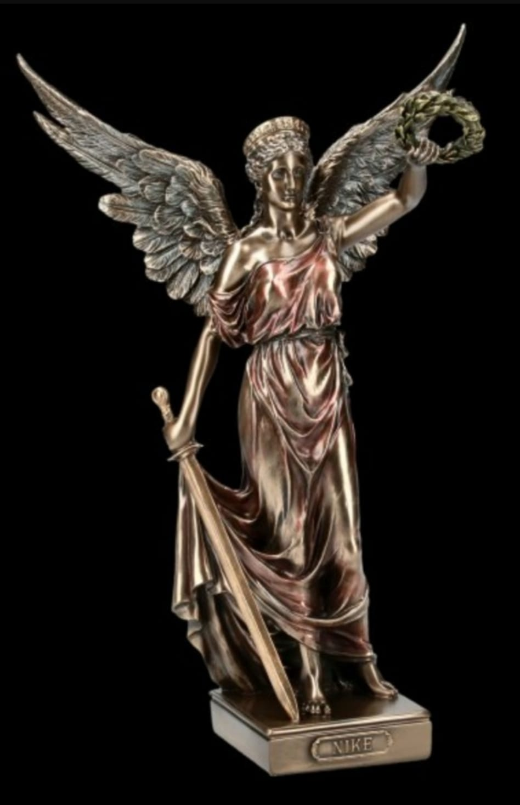

Wie wurde Nizza zu dem, was es heute ist?
Offiziell wurde das heutige Nizza als damalige griechische Siedlung um etwa 350 v. Chr Griechen aus Kleinasien gegründet. Dieser gaben sie den Namen Nikaia Polis und benannten sie damit nach der griechischen Siegesgöttin Nike. Bald, um 154 v. Chr, eroberten die Römer jedoch die Provence und gründeten in den Hügeln über Nizza die Siedlung Cemenelum, welche in Konkurrenz zu Nizza stand und heutzutage unter dem Namen Cimiez Stadtteil dieses ist. Nikaia Polis wurde zu Nicaea.
In den Folgejahrhunderten kam Nizza zunächst in den Besitz der Ostgoten, anschließend um 536 n. Chr. in den der Franken,
wurde dadurch also ein Teil Frankreichs, nur um dann von den Sarazenen angegriffen und geplündert zu werden, die erst im 10. Jahrhundert endgültig vertrieben werden konnten.
Im 14. Jahrhundert entschied sich die provenzalische Grafschaft Nizza dazu, sich dem italienischen Grafen von Savoyen zu unterstellen und sich somit von Frankreich zu lösen, womit immer wieder kriegerische Konflikte ausgelöst wurden, die sich bis in die Gegenwart insofern ausgezeichnet haben, dass die sehr alten Bauten kaum noch erhalten sind.
Drei Jahre nach der Französischen Revolution schloss sich Nizza Frankreich an, fiel jedoch 1814 durch Napoleons Niederlage bei Waterloo an das Königreich Sardinien. Im Jahre 1860 unterstützte Frankreich dieses militärisch und bekam dafür Nizza und Savoyen. Durch den Vertrag von Turin werden beide wieder französisch. 1864 wurde die Cote d'Azur an das französische Eisenbahnnetz angeschlossen, womit der Aufschwung der Stadt begann.
Heute ist die Stadt als Wirtschafts- und Touristenzentrum bekannt, welches seine Kunst, Kultur und Geschichte wiederspiegelt.